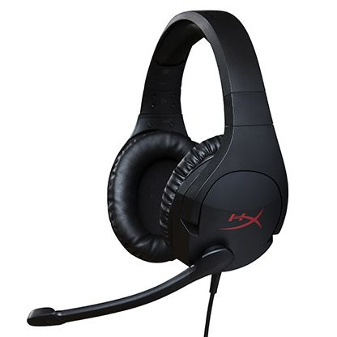
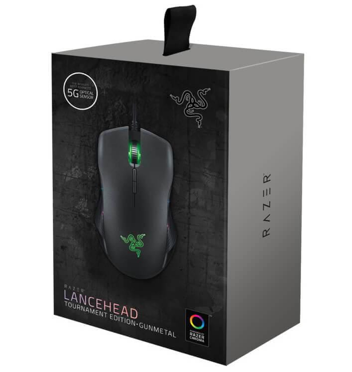
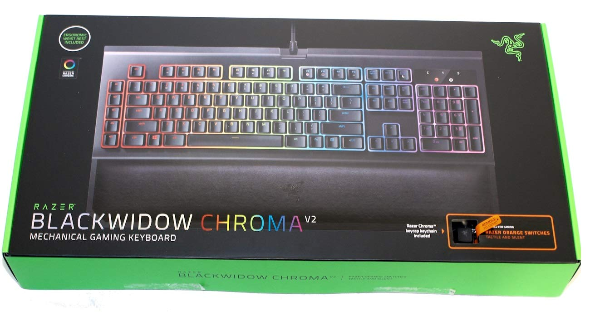

<!DOCTYPE html>
<html lang="pt-br">

<head>
    <meta charset="UTF-8">
    <title>Periféricos</title>
</head>

<body><a id="inicio" href="#final"></a></body>

<body>
    <a href="#final">Ir para o fim</a><br><br>

    
</body>

<body>
    <p style="font-size: 30px;color:black;"><i><b>HeadSet</b></i></p>

    <ul>
        <li>Modelo: HyperX Cloud Stinger</li>
        <li>Marca: HyperX</li>
        <li>Resposta de frequência: 18Hz–23,000 Hz </li>
        <li>Nível de pressão sonora: 102 ± 3dBSPL/mW a 1kHz </li>
        <li>Potência de entrada classificação 30mW, máxima 500mW </li>
        <li>R$: 300.00</li>
    </ul>
</body>

<br>
<br>
<br>
<br>
<br>
<br>
<br>

<body>
    
</body>

<body>
    <p style="font-size: 30px;color:black;"><i><b>Mouse</b></i></p>

    <ul>
        <li>Modelo: Lancehead</li>
        <li>Sensor Laser 16,000 DPI 5G</li>
        <li>Dongle: 2,4 GHz</li>
        <li>Peso: 655 gramas (bruto com embalagem)</li>
        <li>R$: 905,76</li>
    </ul>
</body>

<br>
<br>
<br>
<br>
<br>
<br>
<br>

<body>
    
</body>

<body>
    <p style="font-size: 30px;color:black;"><i><b>Teclado</b></i></p>

    <ul>
        <li>Modelo: Blackwidow Chroma V2</li>
        <li>Vida útil: de 80 milhões de toques</li>
        <li>Ultrapolling: 1000 Hz</li>
        <li>Peso: 2355 gramas (bruto com embalagem)</li>
        <li>Compatibilidade: Windows 10 / Windows 8 / Windows 7 / Mac OS X (versão 10.8 - 10.11)</li>
        <li>R$: 1.099,90</li>

    </ul>
    <br><br><br><br>

    <p id="final"></p>
    <a href="#inicio">Voltar ao Inicio</a>
</body>

</html>